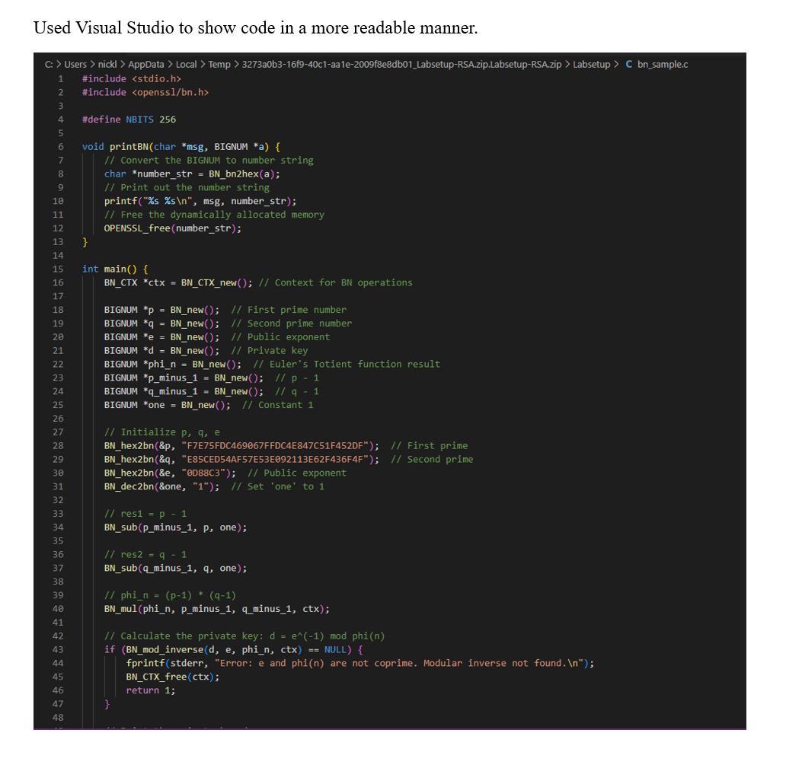
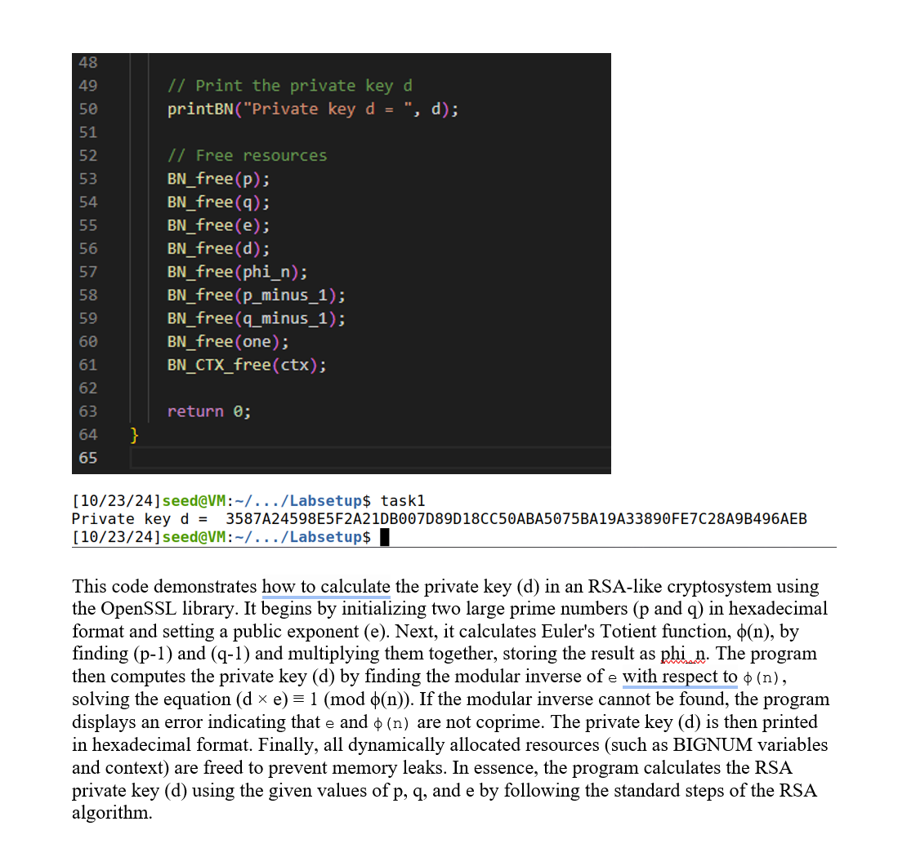
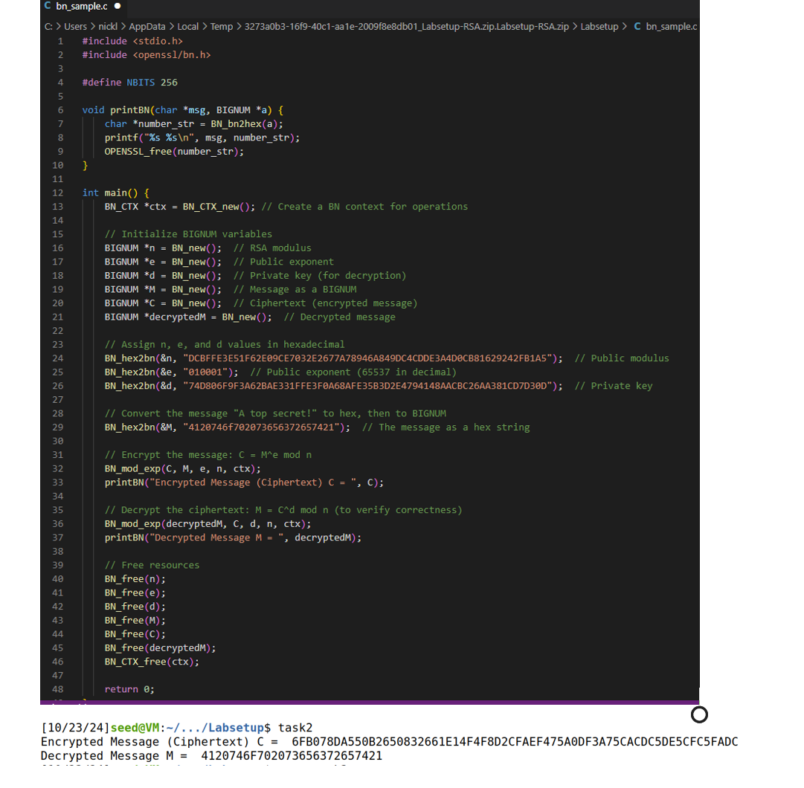
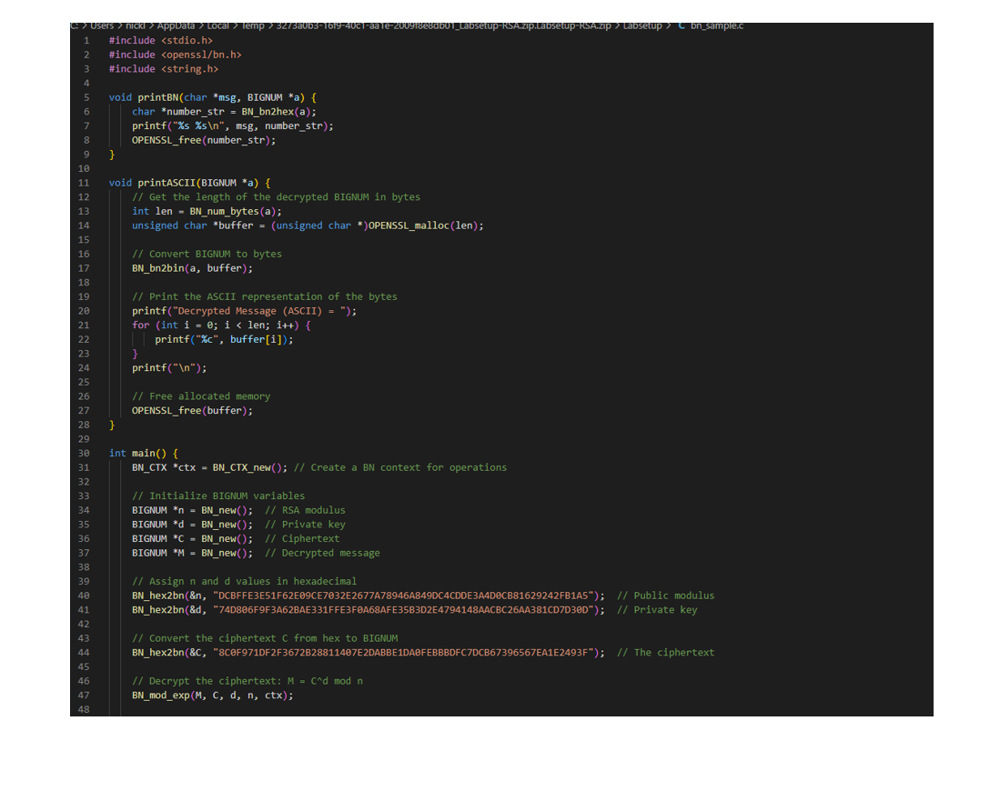
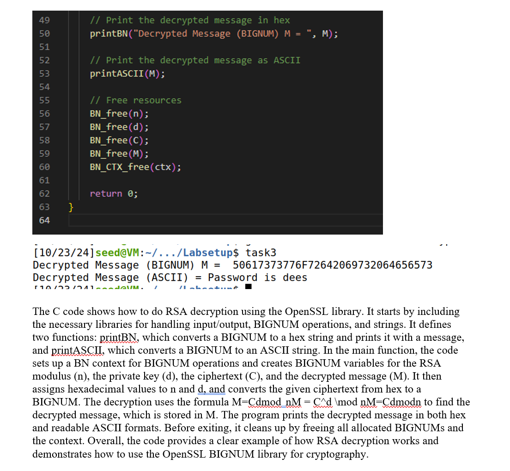
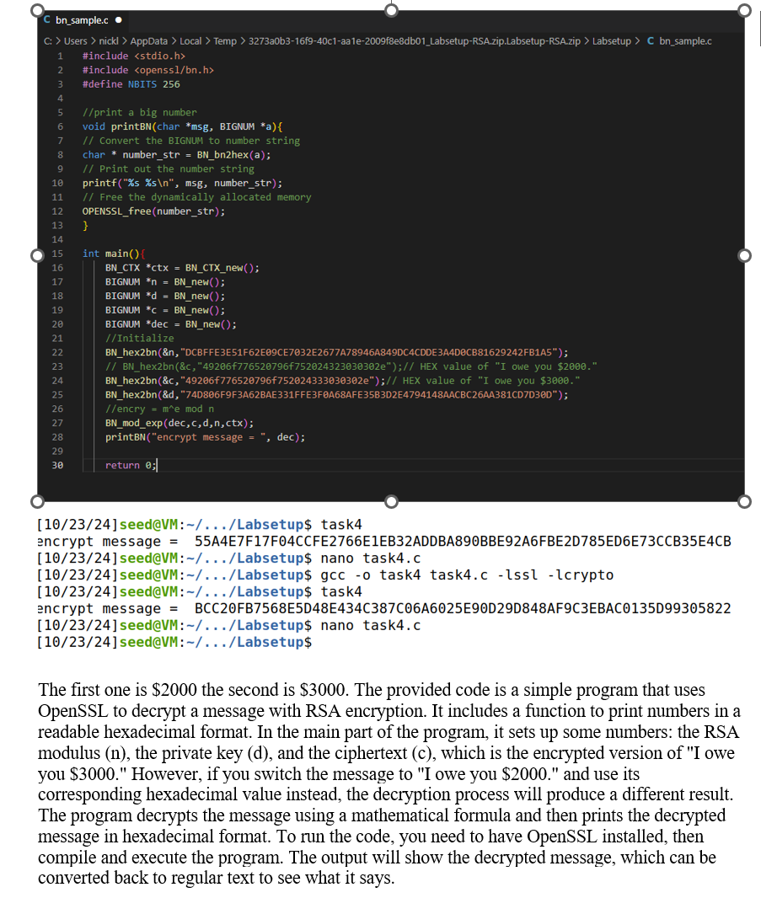
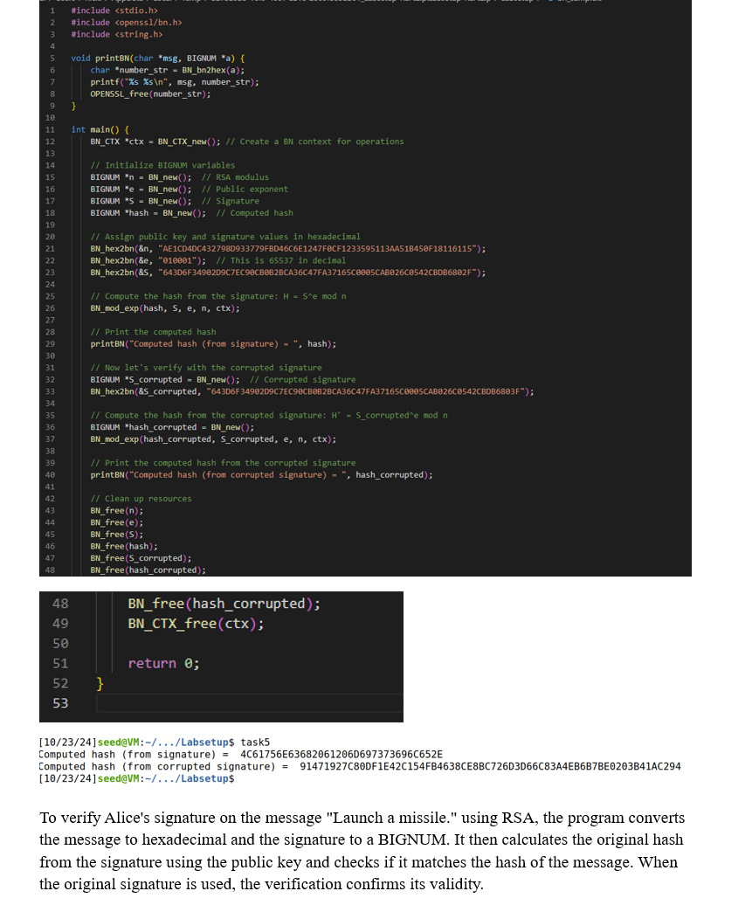

Description: This project explores RSA public-key encryption, decryption, and digital signatures using OpenSSL and C programming. It demonstrates cryptographic computations and principles.
Technologies Used: OpenSSL, C programming
Below are visuals showcasing the RSA project, including encryption, decryption, and key generation:
Description: This code demonstrates the process of key generation for RSA encryption using OpenSSL in C programming.
Description: This image shows the private key calculation using two large prime numbers and modular arithmetic.
Description: Demonstrates how a message is encrypted using the public key and modular exponentiation.
Description: Shows the decryption process where the private key is used to retrieve the original plaintext message.
Description: Validates a digital signature by comparing the computed hash with the decrypted signature hash.
Description: Shows a detailed example of decrypting a message and comparing it to the original plaintext.
Description: Demonstrates the verification of a corrupted digital signature and highlights how mismatched hashes indicate tampering.